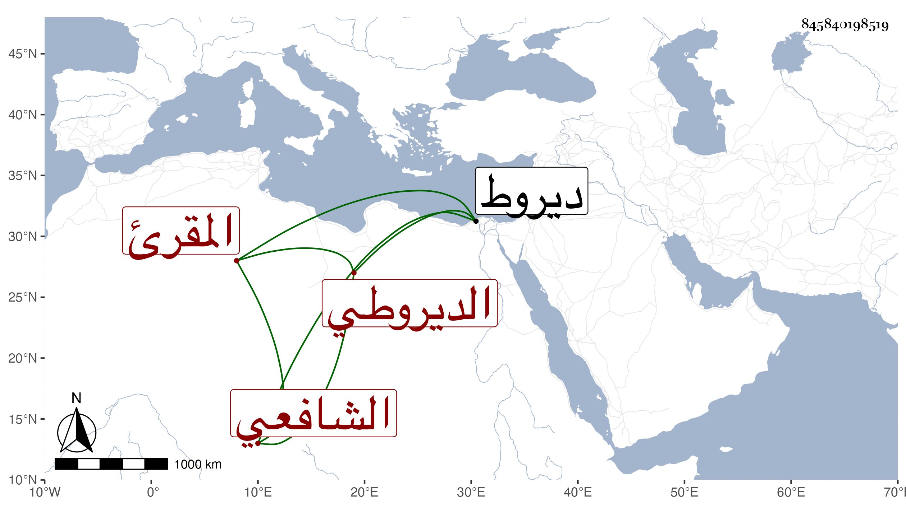

0902Sakhawi.DawLamic.ITO20230111-ara1.EIS1600.845840198519
Biography ID: 845840198519
289
محمد بن يوسف بن أحمد بن محمد الشمس الديروطي الشافعي المقرئ والد فاطمة الآتية ويعرف بابن الصائغ . حفظ القرآن الشاطبيتين وغيرهما وتلا بالسبع إفرادا وجمعا على البرهان الكركي وبه انتفع وبلديه النور الديروطي بها بل وعلى النور بن يفتح الله السكندري والشمس محمد بن عرادة ، وحج بعد الأربعين فتلا بالسبع أيضا إلى المفلحون على الزين بن عياش ومحمد الكيلاني وأخذ أيضا عن ابن الزين النحريري والشهابين ابن هاشم والقلقيلي السكندري وسرور المغربي والشمس العفصي وحبيب العجمي والنور البلبيسي الإمام وطاهر وابن كزلبغا وعبد الدائم وغيرهم ممن دب ودرج وتصدى للإقراء في بلده فانتفع به جماعة وكان مبارك التعليم ما قرأ عليه أحد إلا وانتفع ولم ينفك عن التعيش بالحياكة . مات في سنة أربع وستين بديروط ودفن بها عن نحو السبعين رحمه الله .
